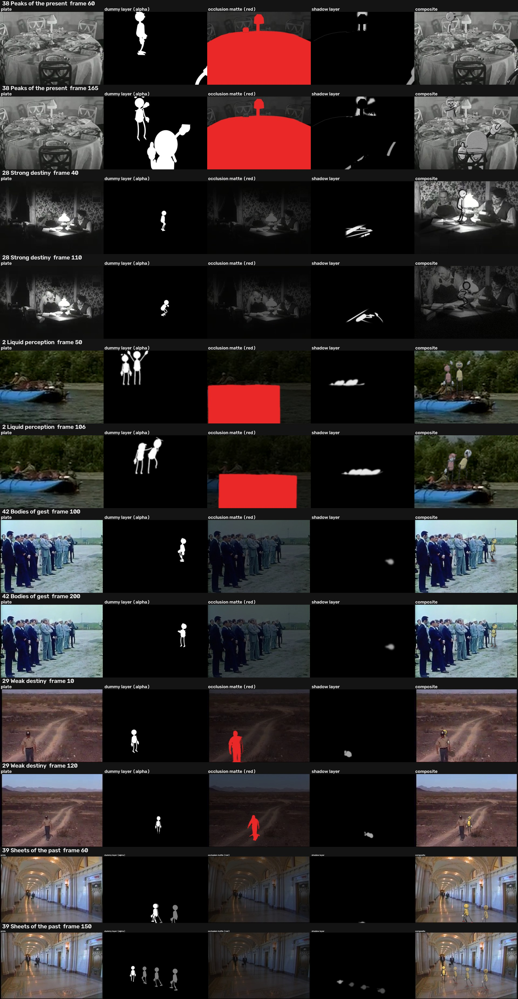
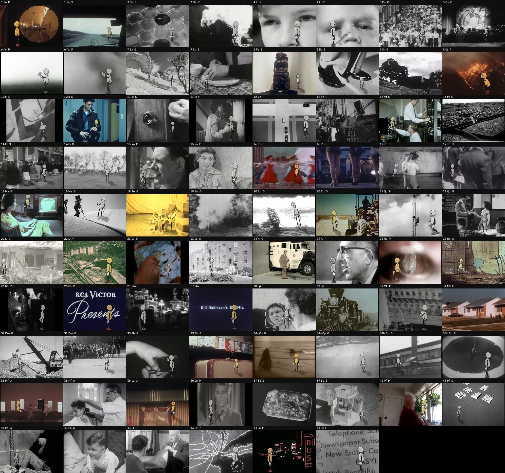

05 · CINEOSIS hybrid
The crash-lab dummies put into the real example clip for each of the 45 CINEOSIS signs. The pilot took six signs chosen for the hardest integration cases (occlusion, light, a moving camera) and fitted each plate by hand. The atlas scaled the method to every sign: 84 passages, 78 of them placed by an automatic pipeline, reviewed by a fresh critic.
Each passage puts the crash-lab dummies into the real example clip for that sign on the cineosis-lab periodic table. There are six signs, chosen to test the hardest integration cases. Two fresh critics reviewed the work, one per round. Neither had seen it made, and both judged the frames at 24 fps, not still images.
| Sign | Plate | Case it tests |
|---|---|---|
| 38 Peaks of the present | Hotel and Restaurant Workers: a laid dining table, static, black and white | Occlusion through a rattan chair, and a real glass passing between media |
| 28 Strong destiny | Singing Wires: two men at a desk with an oil lamp | Light: the lamp is turned down and the whole plate is relit |
| 2 Liquid perception | National Wildlife Refuges of Alaska: a raft drifting midstream | Riders on a moving support, with a floating camera |
| 42 Bodies of gest | Mission of Apollo/Soyuz: a row of dignitaries, handheld | Shared floor and scale beside real people |
| 29 Weak destiny | Cabeza Prieta: a ranger on a desert track, camera rising | A moving camera, and occlusion behind a walking person |
| 39 Sheets of the past | Court to Court: a palace corridor, gliding camera | A moving camera, with past copies planted on the floor |
| Sign | Round 1 | Round 2 (after fixes) | Largest failure still visible |
|---|---|---|---|
| 39 Sp | Weak | Meets the bar | Copies are barely translucent. Bola only peeks in during the opening tilt. |
| 38 Pp | Weak | Weak | The lifted glass reads as a white smear, not a glass. The patch where it stood has a hard rectangular edge. |
| 42 Bg | Misses | Weak | Toe-down feet at rest. Footsteps stop before the steps do. |
| 28 Sd | Weak | Weak | The knob turn is not visible, so the dim seems to come before her hand. She casts no hard lamp shadow. Her toon scale breaks the size rule. |
| 2 Lq | Misses | Misses | The fall, the catch and the sit do not read. The dummies tower over the crew. The cargo matte is a rectangle. |
| 29 Wd | Misses | Misses | Her feet are not on his ground line at the right scale, so she floats or looks too big. Her reveal from behind him leaks. Her shadow is weak. |
| Sign | Changes |
|---|---|
| 38 | Chair matte keyed to the rattan strokes only. Glass patch feathered. Toast moved toward Bola. |
| 28 | Push-in on the desk. Toon scale enlarged. Globe now dims with the room. Stronger lamp-side shading. |
| 2 | Tighter following crop. Larger toons. Softer, less saturated grade. Bigger stumble and a held catch. |
| 42 | Bola moved to the end of the row, so she is no longer cut up between the men. Soft overhead contact shadow. |
| 29 | Scale measured against the ranger and corrected. Path moved toward the rut. Starts hidden behind him. |
| 39 | Copies made Bola-yellow at 50%. Stronger reflections. |
Pipeline per passage 1. Plate: the sign's own example clip from cineosis-lab, cut-free segment, 24 fps, upscaled to 720 high. Static plates shorter than the action are ping-ponged. 2. Camera: a pinhole fitted to the plate (focal, height, pitch, roll) from table/lamp/row/horizon points; moving plates add a tracked 2D transform per frame (raft: template + ECC; row: phase correlation; desert and corridor: LK floor features → homography chain). 3. Dummies: the crash-lab rig authored in a world laid out to the plate, checked by the lab checker (balance, planted feet, reach, clash, floor), rendered per actor as a transparent orthographic layer from the direction the plate camera sees it, mapped by the pinhole's local affine at the actor's anchor (plus the tracked transform). 4. Shadows: the dummy silhouette projected along the plate's light onto receiving planes (wall, desk, cargo, ground), mapped by the plane's homography, blurred and multiplied; contact occlusion under feet and hands. 5. Occlusion: per-shot mattes — key of the rattan chair on a clean plate, hand polygons (table, lamp, cargo heap) carried by the track, ISNet salient matte on the ranger; depth-gated against the dummy's distance. 6. Look: grade (mono or colour, saturation, white balance, contrast), terminator shading from the silhouette toward the light, resampled through the plate's native resolution (320×240) so it shares the plate's softness, per-frame grain. 7. Interaction with the plate: lifted real glass (cut out, carried, its place inpainted); lamp turned down (plate relit in linear light, globe included); raft motion carried; plate camera moves followed. 8. Sound: the plate's own track (looped plates get ambience), foley placed from the rig's foot contacts and authored events.

This round built 84 passages across all 45 signs:
The film is about 12 minutes long. A fresh critic, who had not seen the work being made, reviewed it:
| Works | Partly | Fails | |
|---|---|---|---|
| All 78 automatic passages | ~30 (38%) | ~34 (44%) | ~14 (18%) |
| P (proscenium) | ~55% | ||
| S (surface) | ~45% | ||
| G (ground) | ~25% |
Best in the atlas:
Drop or reroute:
What carries over:

CONSEQUENCE WORKS · Watson Hartsoe · built with Claude. The films are rendered from code; the archive footage is the cineosis-lab library's, credited inside each film.